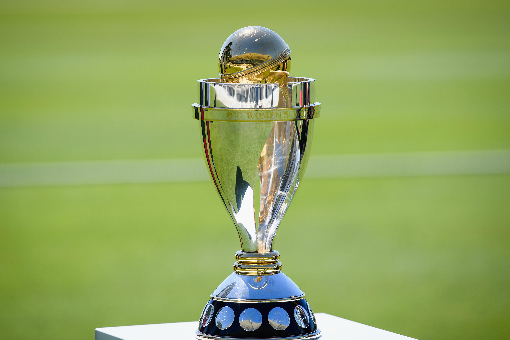
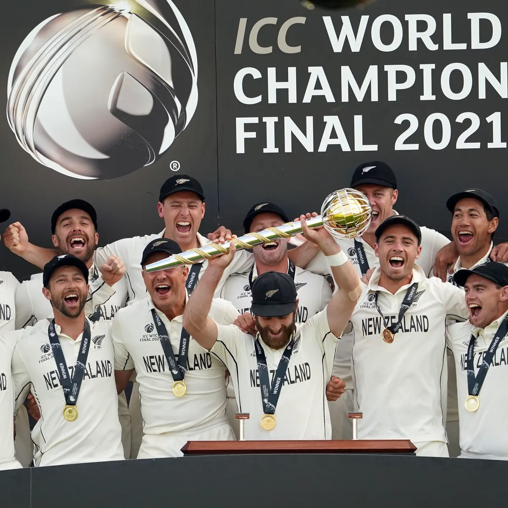
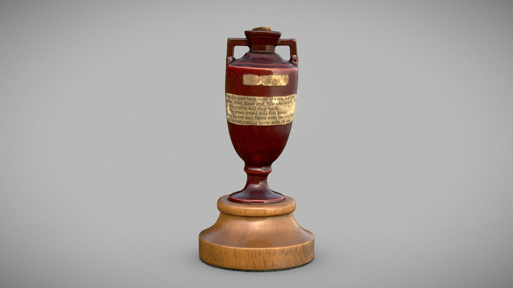

Cricket is a bat-and-ball game played between two teams of eleven players on a field at the centre of which is a 22-yard (20-metre) pitch with a wicket at each end, each comprising two bails balanced on three stumps. The batting side scores runs by striking the ball bowled at one of the wickets with the bat and then running between the wickets, while the bowling and fielding side tries to prevent this (by preventing the ball from leaving the field, and getting the ball to either wicket) and dismiss each batter (so they are "out"). Means of dismissal include being bowled, when the ball hits the stumps and dislodges the bails, and by the fielding side either catching the ball after it is hit by the bat, but before it hits the ground, or hitting a wicket with the ball before a batter can cross the crease in front of the wicket. When ten batters have been dismissed, the innings ends and the teams swap roles. The game is adjudicated by two umpires, aided by a third umpire and match referee in international matches. They communicate with two off-field scorers who record the match's statistical information..
The bowler, a player from the fielding team, hurls a hard, fist-sized, cork-centered, leather-covered cricket ball from the vicinity of one wicket towards the other. The ball usually bounces once before reaching the batsman, a player from the opposing team. In defense of the wicket, the batsman plays the ball with a wooden cricket bat.
Meanwhile, the other members of the bowler's team stand in various fielding positions, prepared to retrieve the ball in an effort to stop the batsman from scoring, and possibly to get him or her out. The batsman, if he or she does not get out (for example if the bowled ball hits the wicket, or if a fielder catches the ball off the bat before it bounces), may run between the wickets, exchanging ends with a second batsman (the non-striker), who has been waiting near the bowler's wicket. Each completed exchange of ends scores one run, and the match is won by the team that scores more runs.
There is a consensus of expert opinion that cricket may have been invented during Saxon or Norman times by children living in the Weald, an area of dense woodlands and clearings in south-east England. The first reference to cricket being played as an adult sport was in 1611, and in the same year, a dictionary defined cricket as a boys' game. There is also the thought that cricket may have derived from bowls, by the intervention of a batsman trying to stop the ball from reaching its target by hitting it away.
Village cricket had developed by the middle of the 17th century and the first English “county teams” were formed in the second half of the century, as “local experts” from village cricket were employed as the earliest professionals. The first known game in which the teams use county names is in 1709.
In the first half of the 18th Century cricket established itself as a leading sport in London and the south-eastern counties of England. Its spread was limited by the constraints of travel, but it was slowly gaining popularity in other parts of England and Women’s Cricket dates back to the 1745, when the first known match was played in Surrey.
In 1744, the first Laws of Cricket were written and subsequently amended in 1774, when innovations such as lbw, a 3rd stump, - the middle stump and a maximum bat width were added. The codes were drawn up by the “Star and Garter Club” whose members ultimately founded the famous Marylebone Cricket Club at Lord's in 1787. MCC immediately became the custodian of the Laws and has made revisions ever since then to the current day.
Rolling the ball along the ground was superseded sometime after 1760 when bowlers began to pitch the ball and in response to that innovation the straight bat replaced the old “hockey-stick” style of bat. The Hambledon Club in Hampshire was the focal point of the game for about thirty years until the formation of MCC and the opening of Lord's Cricket Ground in 1787.
Cricket was introduced to North America via the English colonies as early as the 17th century, and in the 18th century it arrived in other parts of the globe. It was introduced to the West Indies by colonists and to India by British East India Company mariners. It arrived in Australia almost as soon as colonisation began in 1788 and the sport reached New Zealand and South Africa in the early years of the 19th century.


